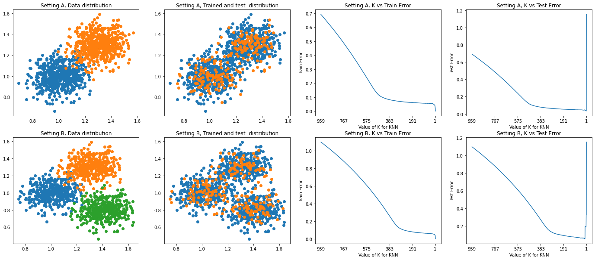

Code
import matplotlib.pyplot as plt
import numpy as np
from sklearn.neighbors import KNeighborsClassifier
from sklearn import metrics
from sklearn.model_selection import StratifiedShuffleSplit
def get_multivariate(_mean,_cov,_numData,_class):
np.random.seed(0)
data = np.random.multivariate_normal(_mean,_cov,_numData)
target = np.ones(_numData)*_class
return data,target
def get_dataAndTarget(numData,numClass):
meanA = [1,1]
covA = [[0.01,0.001],
[0.001,0.01]]
meanB = [1.3,1.3]
covB = [[0.01,0.001],
[0.001,0.01]]
meanC = [1.4,0.8]
covC = [[0.01,0.001],
[0.001,0.01]]
if(numClass==3):
dataA,targetA = get_multivariate(meanA,covA,numData//3,0)
dataB,targetB = get_multivariate(meanB,covB,numData//3,1)
dataC,targetC = get_multivariate(meanC,covC,numData//3,2)
data = np.vstack([dataA,dataB,dataC])
target = np.hstack([targetA,targetB,targetC])
return data,target
if(numClass==2):
dataA,targetA = get_multivariate(meanA,covA,numData//2,0)
dataB,targetB = get_multivariate(meanB,covB,numData//2,1)
data = np.vstack([dataA,dataB])
target = np.hstack([targetA,targetB])
return data,target
def runKNeighborsClassifier(numData,numClass):
data ,target = get_dataAndTarget(numData,numClass)
sss = StratifiedShuffleSplit(n_splits=1, test_size=0.2, random_state=0)
train_index, test_index = list(sss.split(data, target))[0]
X_train, X_test = data[train_index], data[test_index]
y_train, y_test = target[train_index], target[test_index]
k_range = range(1,X_train.shape[0])
scores_list = []
for k in k_range:
knn = KNeighborsClassifier(n_neighbors=k)
knn.fit(X_train,y_train)
y_pred=knn.predict_proba(X_train)
scores_list.append(metrics.log_loss(y_train,y_pred))
scores_list_test = []
for k in k_range:
knn = KNeighborsClassifier(n_neighbors=k)
knn.fit(X_train,y_train)
y_pred=knn.predict_proba(X_test)
scores_list_test.append(metrics.log_loss(y_test,y_pred))
return scores_list,scores_list_test,data,X_train, X_test,
num_data=1200
scores_list_2,scores_list_test_2,data_2,X_train_2, X_test_2 =runKNeighborsClassifier(num_data,2)
scores_list_3,scores_list_test_3,data_3,X_train_3, X_test_3 =runKNeighborsClassifier(num_data,3)
fig, ax = plt.subplots(2, 4, figsize=(24, 10))
ax[0,0].scatter(data_2[:num_data//2,0],data_2[:num_data//2,1])
ax[0,0].scatter(data_2[num_data//2:,0],data_2[num_data//2:,1]);
ax[0,0].set_title('Setting A, Data distribution')
ax[0,1].scatter(X_train_2[:,0],X_train_2[:,1])
ax[0,1].scatter(X_test_2[:,0],X_test_2[:,1]);
ax[0,1].set_title('Setting A, Trained and test distribution')
ax[0,2].plot(scores_list_2)
ax[0,2].set_xlabel('Value of K for KNN')
ax[0,2].set_ylabel('Train Error');
ax[0,2].set_title('Setting A, K vs Train Error')
ax[0,2].invert_xaxis()
ax[0,2].set_xticks(np.hstack([np.arange(len(scores_list_2),0,-len(scores_list_2)//5),1]))
ax[0,2].set_xticklabels(np.hstack([np.arange(len(scores_list_2),0,-len(scores_list_2)//5),1]))
ax[0,3].plot(scores_list_test_2)
ax[0,3].set_xlabel('Value of K for KNN')
ax[0,3].set_ylabel('Test Error');
ax[0,3].set_title('Setting A, K vs Test Error')
ax[0,3].invert_xaxis();
ax[0,3].set_xticks( np.hstack([np.arange(len(scores_list_2),0,-len(scores_list_2)//5),1]))
ax[0,3].set_xticklabels(np.hstack([np.arange(len(scores_list_2),0,-len(scores_list_2)//5),1]))
ax[1,0].scatter(data_3[:num_data//3,0],data_3[:num_data//3,1])
ax[1,0].scatter(data_3[num_data//3:2*num_data//3,0],data_3[num_data//3:2*num_data//3,1]);
ax[1,0].scatter(data_3[2*num_data//3:,0],data_3[2*num_data//3:,1]);
ax[1,0].set_title('Setting B, Data distribution')
ax[1,1].scatter(X_train_3[:,0],X_train_3[:,1])
ax[1,1].scatter(X_test_3[:,0],X_test_3[:,1]);
ax[1,1].set_title('Setting B, Trained and test distribution')
ax[1,2].plot(scores_list_3)
ax[1,2].set_xlabel('Value of K for KNN')
ax[1,2].set_ylabel('Train Error');
ax[1,2].set_title('Setting B, K vs Train Error')
ax[1,2].invert_xaxis()
ax[1,2].set_xticks( np.hstack([np.arange(len(scores_list_3),0,-len(scores_list_3)//5),1]))
ax[1,2].set_xticklabels( np.hstack([np.arange(len(scores_list_3),0,-len(scores_list_3)//5),1]))
ax[1,3].plot(scores_list_test_3)
ax[1,3].set_xlabel('Value of K for KNN')
ax[1,3].set_ylabel('Test Error');
ax[1,3].set_title('Setting B, K vs Test Error')
ax[1,3].invert_xaxis();
ax[1,3].set_xticks(np.hstack([np.arange(len(scores_list_3),0,-len(scores_list_3)//5),1]))
ax[1,3].set_xticklabels(np.hstack([np.arange(len(scores_list_3),0,-len(scores_list_3)//5),1]));